| Tier | Pass | Fail |
|---|---|---|
| bridge | 25 | 0 |
| image | 2 | 0 |
| scene | 5 | 0 |
| Layer | TCs | Automated |
|---|---|---|
| L1 Core rules | 4 | 4 |
| L2 State | 2 | 2 |
| L3 Scoring | 3 | 3 |
| L4 UI | 6 | 3 |
| L5 Input | 2 | 2 |
| L6 Persistence | 5 | 2 |
| L7 Ads | 7 | 2 |
| L8 Analytics | 3 | 1 |
| L9 Platform | 4 | 1 |
| L10 Performance | 4 | 3 |
| L11 Compatibility | 3 | 0 |
| L12 L10n & a11y | 1 | 0 |
| L13 Experience | 3 | 0 |
| Status | TC ID | Test | Layer | Tier | Prio | Time | Evidence | Shot |
|---|---|---|---|---|---|---|---|---|
| PASSED | WBJ-TC-001 | Game loads to playable scene within 15 s test_01_smoke::test_game_loads_to_game_scene_within_budget
|
L10 Performance | bridge | P0 | 9.5s | score=- · ready=8.9s · fps=60.3 x/x/x/x/bbbb1bbbb/x/x/x/x l s1,b |
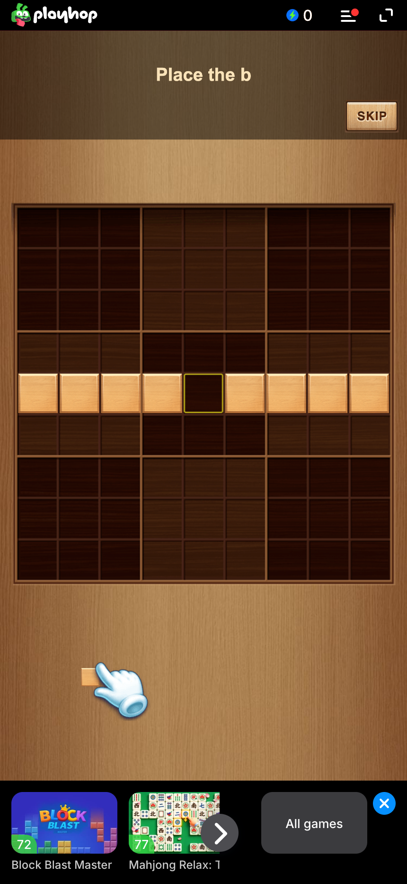 |
| PASSED | WBJ-TC-002 | Canvas renders (not blank) test_01_smoke::test_canvas_actually_renders
|
L4 UI | image | P0 | 9.0s | score=- · ready=8.65s · fps=60.5 x/x/x/x/bbbb1bbbb/x/x/x/x l s1,b |
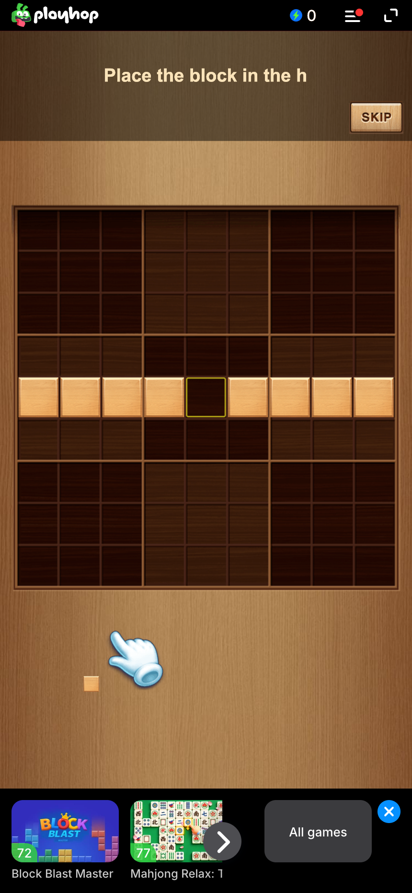 |
| PASSED | WBJ-TC-003 | No uncaught JS errors on launch and first moves test_01_smoke::test_no_uncaught_js_errors_during_launch_and_first_moves
|
L9 Platform | bridge | P0 | 18.5s | score=11 · ready=8.74s · fps=60.6 bbbbbbb2/bb4b2/6b2/x/x/x/x/x/x l e2-h,b l1-dl,b u_piece-dr,b |
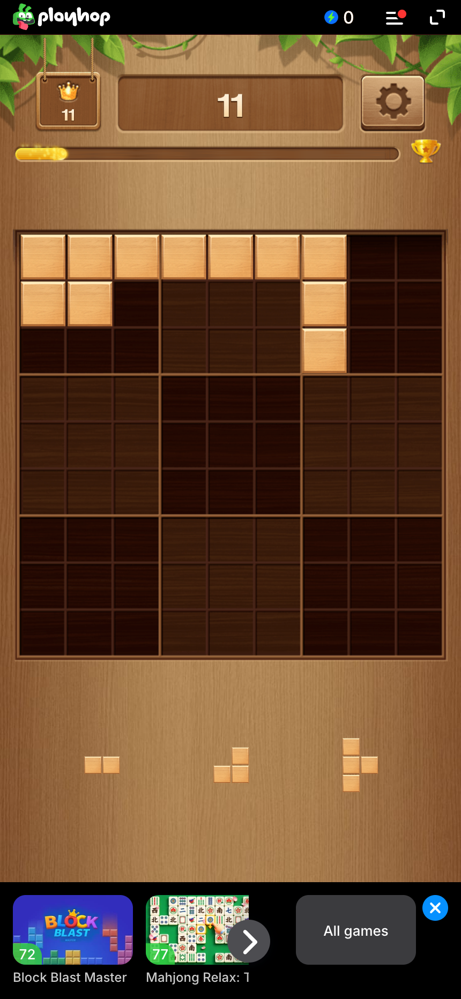 |
| PASSED | WBJ-TC-062 | Test traffic does not reach production analytics test_01_smoke::test_test_traffic_never_reaches_analytics_or_ads
|
L8 Analytics | bridge | P0 | 11.9s | score=0 · ready=9.37s · fps=60.3 x/x/x/x/x/x/x/x/x l e2-h,b e3-v,b e2-v,b |
|
| PASSED | WBJ-TC-010 | New player starts in the tutorial, step 1 test_02_tutorial::test_new_player_starts_in_tutorial
|
L2 State | bridge | P0 | 9.4s | score=- · ready=9.29s · fps=60.2 x/x/x/x/bbbb1bbbb/x/x/x/x l s1,b |
|
| PASSED | WBJ-TC-011 | Complete all 4 tutorial steps with real drags test_02_tutorial::test_complete_tutorial_with_real_drags
|
L5 Input | scene | P0 | 21.3s | score=0 · ready=8.93s · fps=60.7 x/x/x/x/x/x/x/x/x l s2,b e4-h,b e3-h,b |
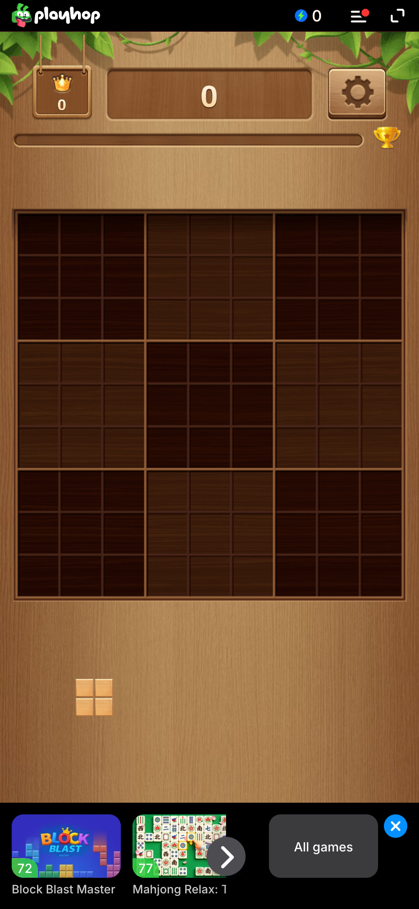 |
| PASSED | WBJ-TC-020 | Placement fills the exact footprint (5 piece families) test_03_board_rules::test_placement_fills_exact_footprint[square_3]
|
L1 Core rules | bridge | P0 | 14.9s | score=9 · ready=9.61s · fps=59.9 x/x/2bbb4/2bbb4/2bbb4/x/x/x/x l e2-v,b e3-v,b |
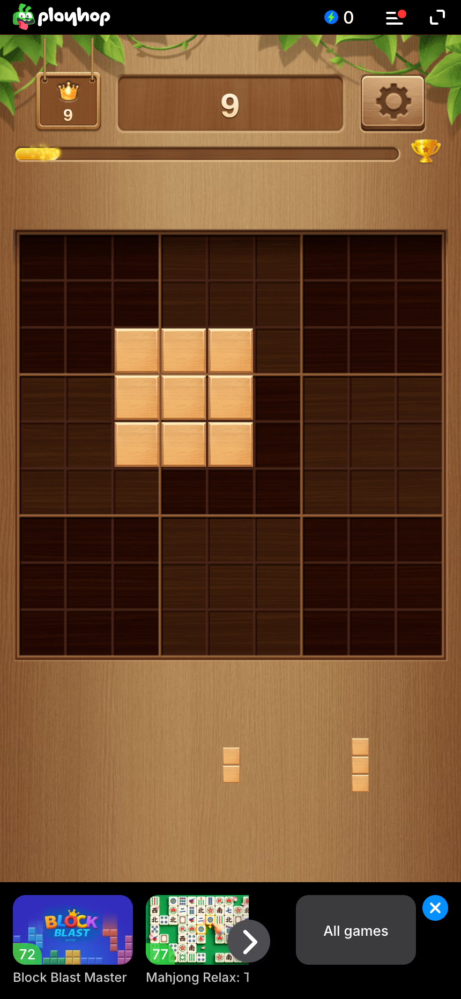 |
| PASSED | WBJ-TC-020 | Placement fills the exact footprint (5 piece families) test_03_board_rules::test_placement_fills_exact_footprint[l_top]
|
L1 Core rules | bridge | P0 | 14.5s | score=4 · ready=9.1s · fps=60.1 x/x/2b6/2b6/2bb5/x/x/x/x l e2-v,b e3-v,b |
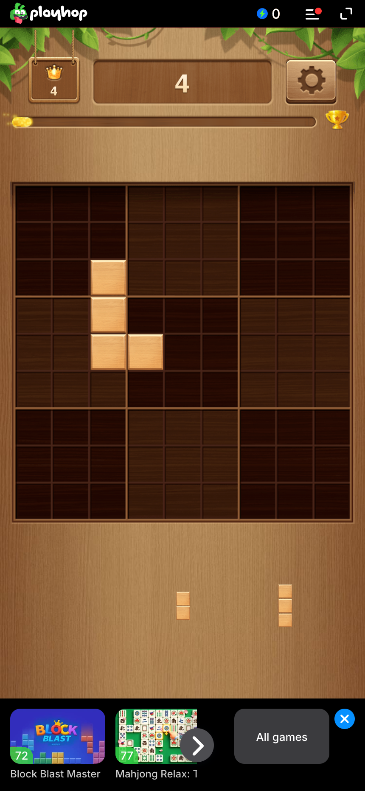 |
| PASSED | WBJ-TC-020 | Placement fills the exact footprint (5 piece families) test_03_board_rules::test_placement_fills_exact_footprint[t_top]
|
L1 Core rules | bridge | P0 | 14.3s | score=5 · ready=9.02s · fps=60.4 x/x/2b6/2b6/1bbb5/x/x/x/x l e2-v,b e3-v,b |
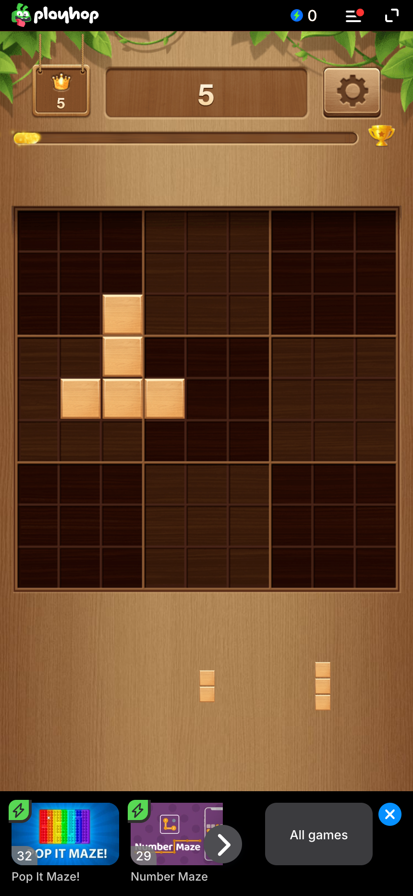 |
| PASSED | WBJ-TC-020 | Placement fills the exact footprint (5 piece families) test_03_board_rules::test_placement_fills_exact_footprint[plus]
|
L1 Core rules | bridge | P0 | 14.4s | score=5 · ready=9.16s · fps=60.7 x/x/2b6/1bbb5/2b6/x/x/x/x l e2-v,b e3-v,b |
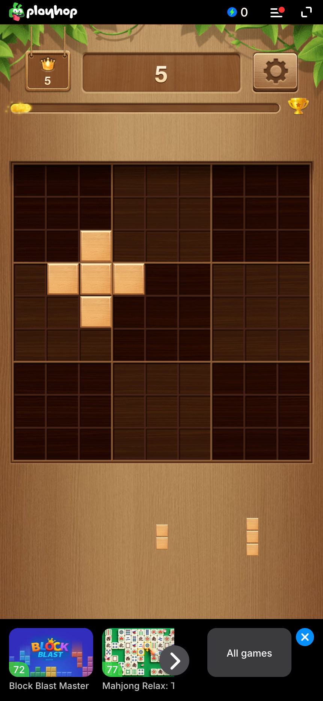 |
| PASSED | WBJ-TC-020 | Placement fills the exact footprint (5 piece families) test_03_board_rules::test_placement_fills_exact_footprint[line_5_v]
|
L1 Core rules | bridge | P0 | 14.2s | score=5 · ready=8.81s · fps=60.2 x/x/2b6/2b6/2b6/2b6/2b6/x/x l e2-v,b e3-v,b |
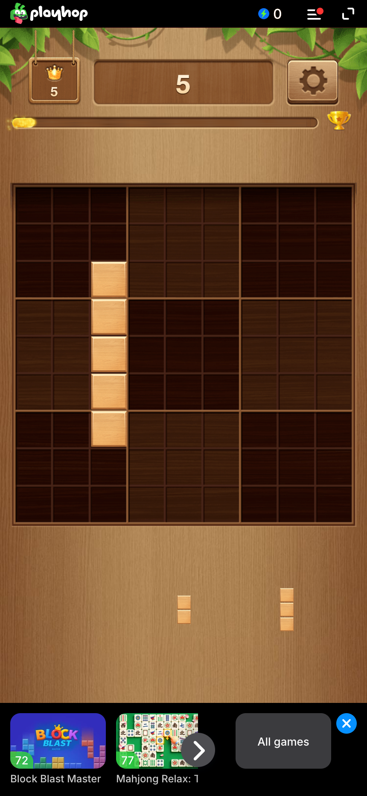 |
| PASSED | WBJ-TC-021 | Drop on occupied cells is rejected test_03_board_rules::test_drop_on_occupied_cells_is_rejected
|
L1 Core rules | bridge | P0 | 15.1s | score=0 · ready=10.76s · fps=59.9 x/x/4b4/x/x/x/x/x/x l s3,b e2-v,b e3-v,b |
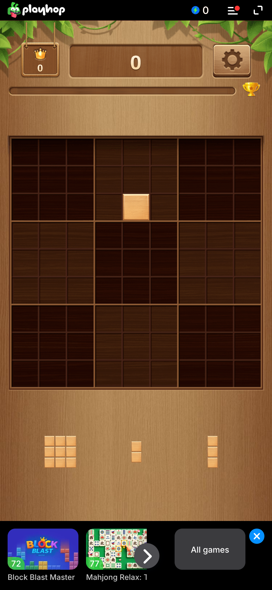 |
| PASSED | WBJ-TC-022 | Drop outside the board is rejected test_03_board_rules::test_drop_outside_the_board_is_rejected
|
L5 Input | bridge | P1 | 13.3s | score=0 · ready=9.01s · fps=60.4 x/x/x/x/x/x/x/x/x l e5-h,b e2-v,b e3-v,b |
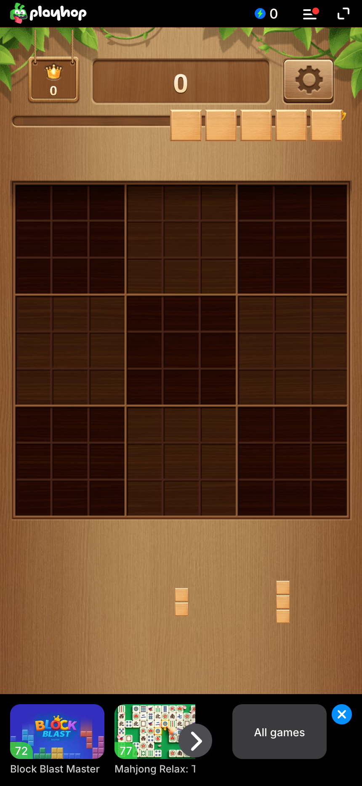 |
| PASSED | WBJ-TC-023 | Row / column / 3×3 box / row+column clear test_03_board_rules::test_line_and_box_clears[row]
|
L1 Core rules | bridge | P0 | 14.4s | score=29 · ready=9.12s · fps=60.9 x/x/x/x/x/x/x/x/x l e2-v,b e3-v,b |
|
| PASSED | WBJ-TC-023 | Row / column / 3×3 box / row+column clear test_03_board_rules::test_line_and_box_clears[column]
|
L1 Core rules | bridge | P0 | 14.0s | score=29 · ready=8.71s · fps=60.4 x/x/x/x/x/x/x/x/x l e2-v,b e3-v,b |
|
| PASSED | WBJ-TC-023 | Row / column / 3×3 box / row+column clear test_03_board_rules::test_line_and_box_clears[box]
|
L1 Core rules | bridge | P0 | 14.9s | score=29 · ready=9.6s · fps=60.6 x/x/x/x/x/x/x/x/x l e2-v,b e3-v,b |
|
| PASSED | WBJ-TC-023 | Row / column / 3×3 box / row+column clear test_03_board_rules::test_line_and_box_clears[row+column]
|
L1 Core rules | bridge | P0 | 15.3s | score=47 · ready=10.04s · fps=60.6 x/x/x/x/x/x/x/x/x l e2-v,b e3-v,b |
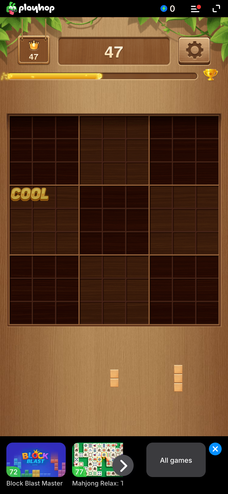 |
| PASSED | WBJ-TC-024 | New hand only after all 3 pieces are used test_03_board_rules::test_new_hand_is_dealt_only_after_all_three_pieces_are_used
|
L1 Core rules | bridge | P1 | 19.9s | score=7 · ready=9.22s · fps=60.5 b7b/8b/x/x/x/x/x/bb7/bb7 l l1-dl,b s2,b e2-h,b |
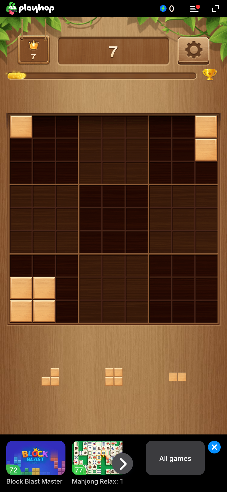 |
| PASSED | WBJ-TC-030 | Placement scores +1 per cell test_04_scoring::test_placement_scores_one_point_per_cell[piece0-1]
|
L3 Scoring | bridge | P0 | 14.6s | score=1 · ready=9.34s · fps=60.3 x/1b7/x/x/x/x/x/x/x l e2-v,b e3-v,b |
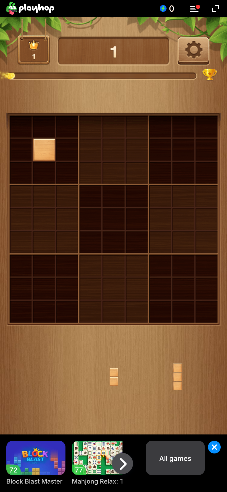 |
| PASSED | WBJ-TC-030 | Placement scores +1 per cell test_04_scoring::test_placement_scores_one_point_per_cell[piece1-4]
|
L3 Scoring | bridge | P0 | 13.9s | score=4 · ready=8.68s · fps=60.5 x/1bb6/1bb6/x/x/x/x/x/x l e2-v,b e3-v,b |
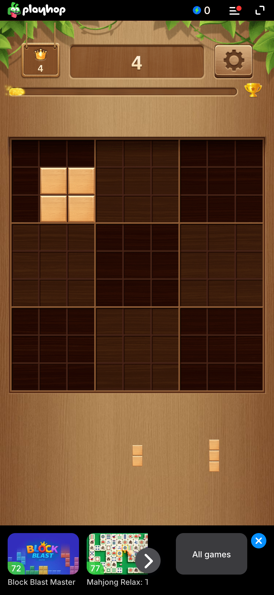 |
| PASSED | WBJ-TC-030 | Placement scores +1 per cell test_04_scoring::test_placement_scores_one_point_per_cell[piece2-9]
|
L3 Scoring | bridge | P0 | 14.0s | score=9 · ready=8.62s · fps=60.6 x/1bbb5/1bbb5/1bbb5/x/x/x/x/x l e2-v,b e3-v,b |
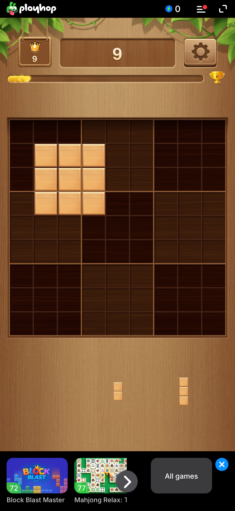 |
| PASSED | WBJ-TC-030 | Placement scores +1 per cell test_04_scoring::test_placement_scores_one_point_per_cell[piece3-5]
|
L3 Scoring | bridge | P0 | 14.5s | score=5 · ready=9.16s · fps=60.5 x/1b7/1b7/1b7/1b7/1b7/x/x/x l e2-v,b e3-v,b |
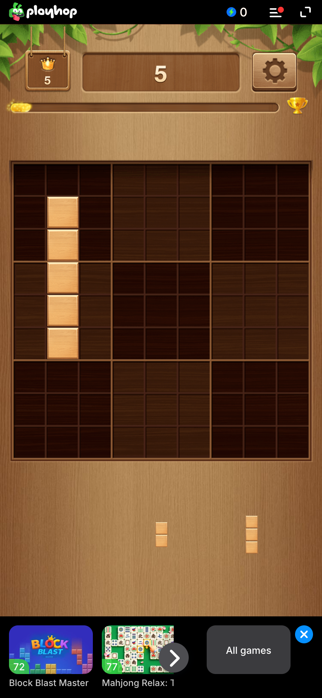 |
| PASSED | WBJ-TC-031 | Clear bonus and streak, streak reset test_04_scoring::test_clear_bonus_and_streak
|
L3 Scoring | bridge | P1 | 19.1s | score=73 · ready=8.98s · fps=60.6 4bb3/4bb3/x/x/x/x/x/x/x l e4-v,b e2-h,b l1-db,b |
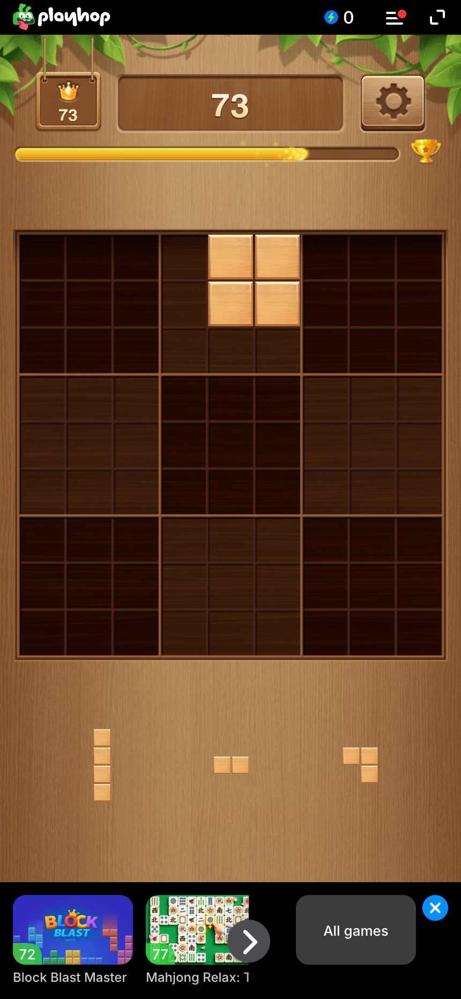 |
| PASSED | WBJ-TC-032 | Double clear bonus test_04_scoring::test_double_clear_bonus
|
L3 Scoring | bridge | P1 | 13.9s | score=47 · ready=8.68s · fps=60.7 x/x/x/x/x/x/x/x/x l e2-v,b s2,b |
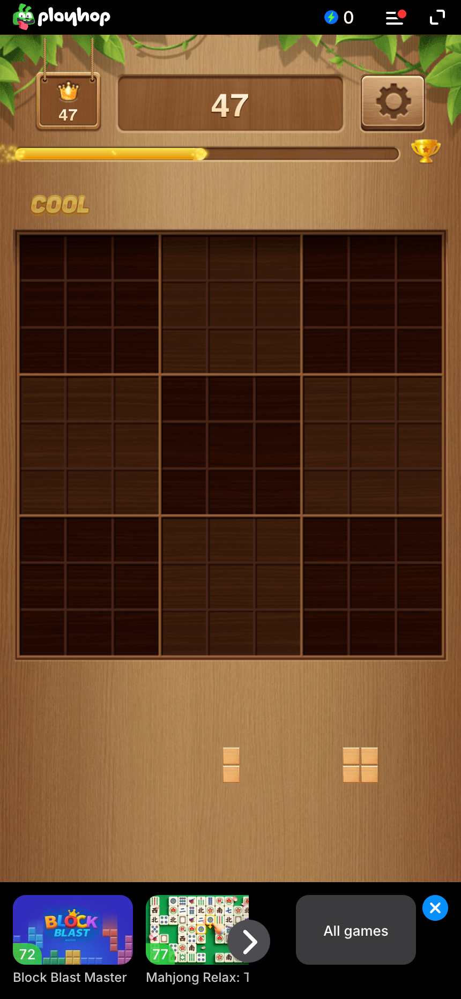 |
| PASSED | WBJ-TC-033 | Reaching target 100 opens Score Reached; next target 250 test_04_scoring::test_first_target_is_100_and_reaching_it_opens_score_reached
|
L2 State | bridge | P1 | 27.6s | score=104 · ready=8.66s · fps=60.3 x/x/x/x/x/x/x/x/x l e2-v,b s2,b |
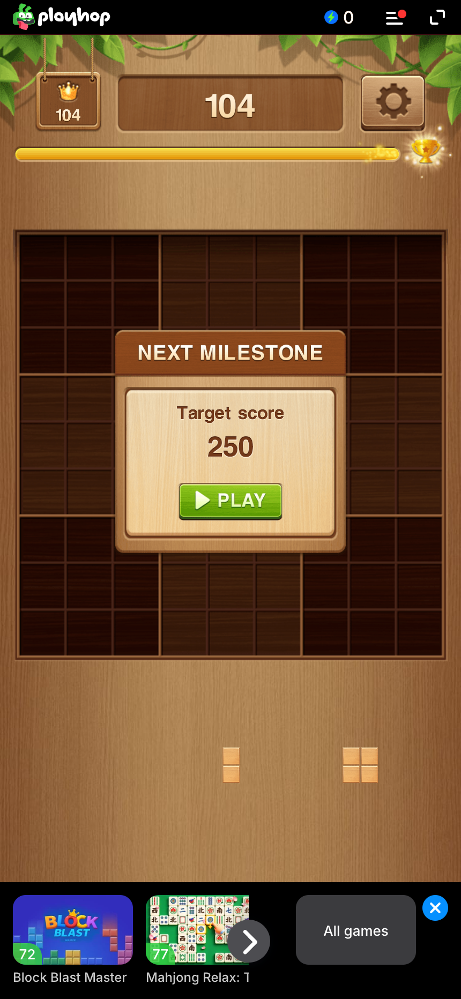 |
| PASSED | WBJ-TC-040 | No fit → Second Chance with countdown test_05_game_over_ads::test_no_fit_offers_second_chance_with_countdown
|
L7 Ads | scene | P0 | 19.5s | score=1 · ready=8.89s · fps=60.8 bbbbb1bbb/bb1bbbb1b/1bbb1bbbb/bb1bbb1bb/bbbb1bbb1/b1bbbb1bb/ |
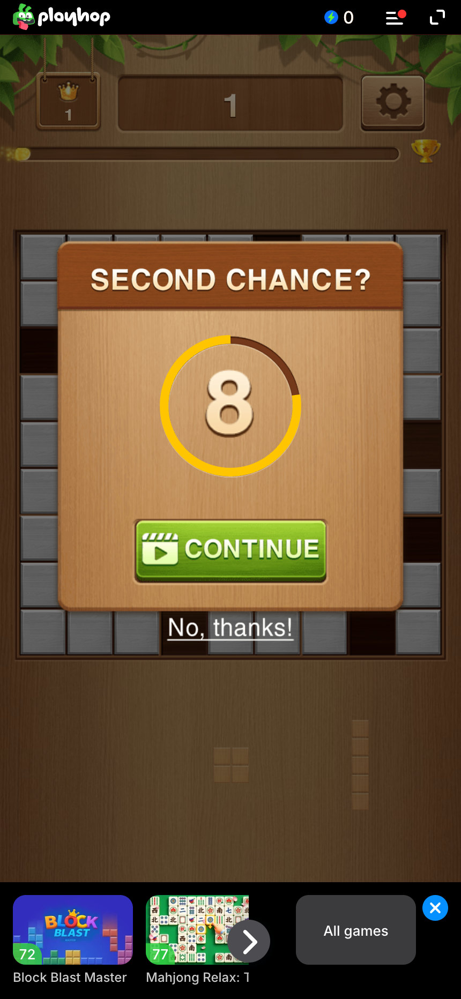 |
| PASSED | WBJ-TC-041 | Ad unavailable never blocks the player test_05_game_over_ads::test_ad_unavailable_never_blocks_the_player
|
L7 Ads | scene | P0 | 34.0s | score=1 · ready=9.22s · fps=60.4 bbbbb1bbb/bb1bbbb1b/1bbb1bbbb/bb1bbb1bb/bbbb1bbb1/b1bbbb1bb/ |
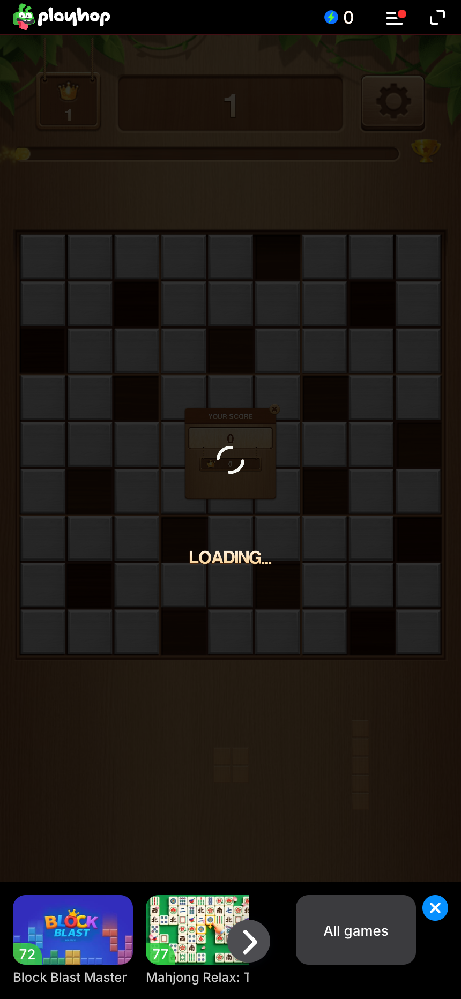 |
| PASSED | WBJ-TC-042 | Game Over panel shows the final score test_05_game_over_ads::test_game_over_screen_shows_final_score
|
L4 UI | scene | P1 | 36.8s | score=1 · ready=9.05s · fps=60.7 bbbbb1bbb/bb1bbbb1b/1bbb1bbbb/bb1bbb1bb/bbbb1bbb1/b1bbbb1bb/ |
|
| PASSED | WBJ-TC-043 | PLAY on Game Over starts a fresh game (image tier) test_05_game_over_ads::test_play_again_by_image_starts_fresh_game
|
L4 UI | image | P1 | 40.1s | score=0 · ready=8.63s · fps=60.9 x/x/x/x/x/x/x/x/x l s1,b cross_piece_2-dl,b e5-v,b |
|
| PASSED | WBJ-TC-013 WBJ-TC-050 |
Returning player never sees the tutorial again test_06_persistence::test_reload_resumes_board_score_and_hand
|
L6 Persistence | scene | P1 | 29.6s | score=11 · ready=8.1s · fps=60.6 bbbbbbbb1/2b6/2bb5/x/x/x/x/x/x l s1,b e2-v,b l3-dl,b |
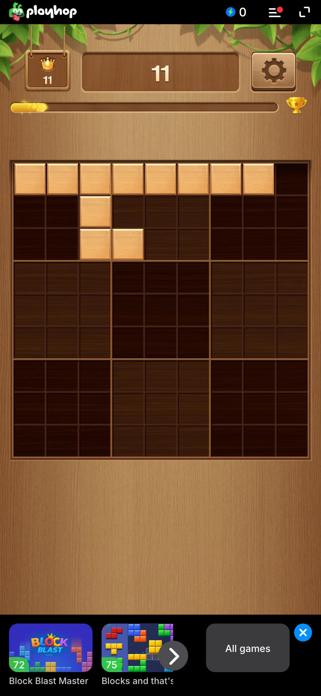 |
| PASSED | WBJ-TC-070 | FPS ≥ 50 avg and heap growth < 25 MB over 12 moves test_07_performance::test_fps_and_memory_during_play
|
L10 Performance | bridge | P1 | 29.5s | score=102 · ready=9.13s · fps=60.8 bb1b1bbb1/1b3bb2/3b2b2/bb3bbbb/1b7/x/x/x/x l cross_piece_2-d |
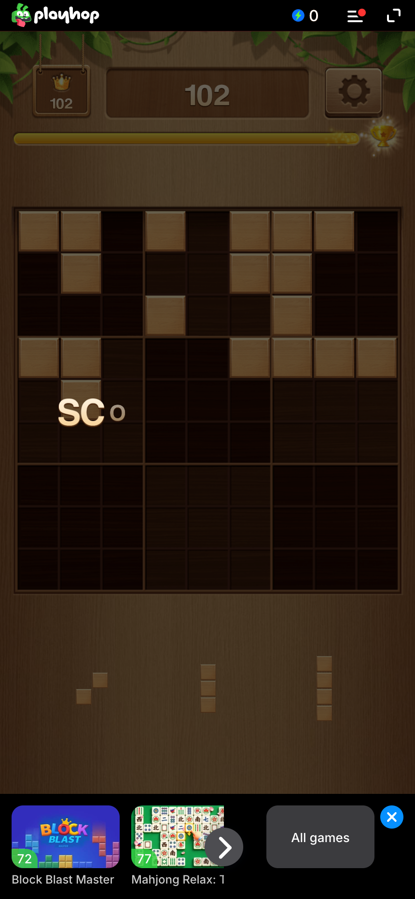 |
| PASSED | WBJ-TC-071 | Game payload < 15 MB test_07_performance::test_game_payload_size
|
L10 Performance | bridge | P2 | 9.5s | score=- · ready=9.3s · fps=60.5 x/x/x/x/bbbb1bbbb/x/x/x/x l s1,b |
Evidence per test: final screenshot, bridge snapshot (FEN, score, screens), console errors, blocked ad/analytics requests → reports/evidence/. JUnit: reports/junit.xml.